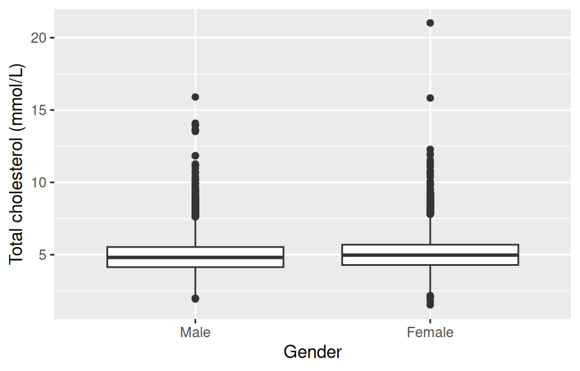
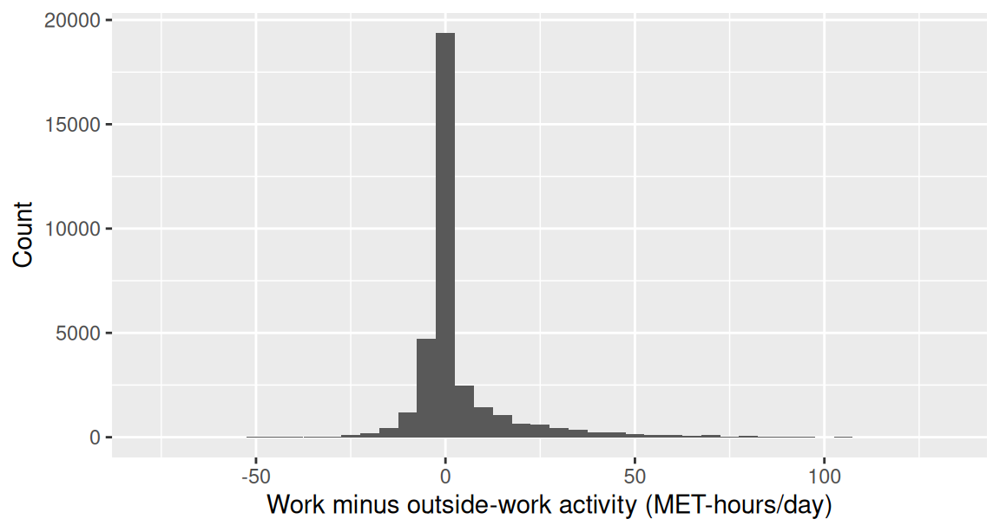
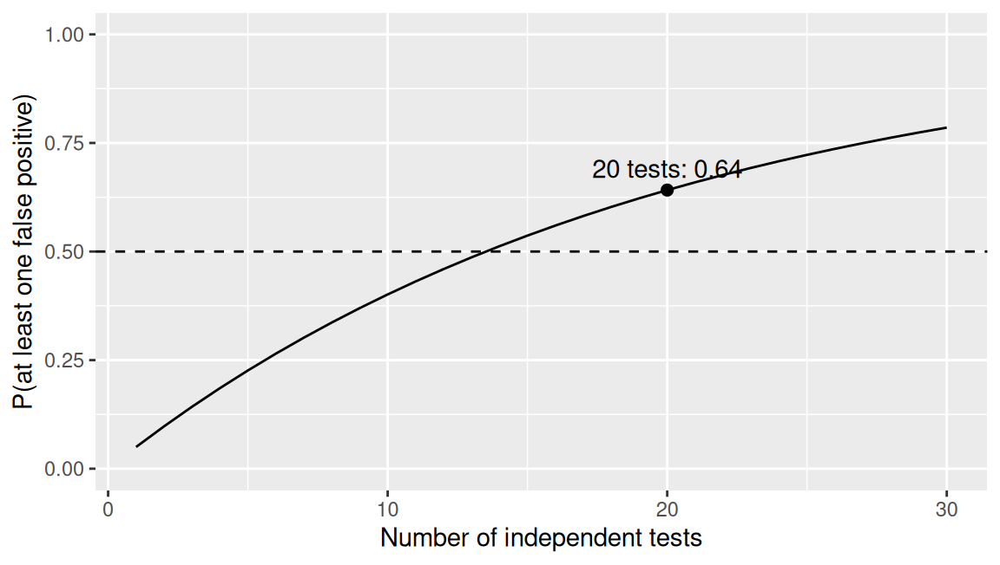

| Quantity | Estimate | 95% CI | Null value |
|---|---|---|---|
| Improved, streptomycin minus control | 0.364 | 0.169 to 0.559 | 0 |
| Improvement OR, men vs women | 1.420 | 0.66 to 3.06 | 1 |
| Sedentary time, women minus men, hours/day | 0.260 | 0.03 to 0.49 | 0 |
Comparing groups
Week 9
Fred Ho
What you have learnt so far
- Stats, Week 8. The interval for the difference in improvement between the
strep_tbarms, 0.169 to 0.559, excluded zero, and the room already read that as a real difference. A test is the formal version of that reading - Stats, Week 7. Variable type decided which summary and which plot were valid. It now decides which test is valid, which is the whole of Block 2
- Epi, Week 2. RR and OR off a 2x2 table, computed as point estimates. This week attaches the interval and the p-value, and states the one thing that changes: the null value is 1, not 0
- Epi, Week 3.
strep_tbis an RCT of the kind Week 3 described, so the comparison tested here is one where randomisation has already dealt with confounding - Epi, Week 5. Bradford Hill’s strength of association is a different idea from statistical significance. The
cholby gender result, 0.17 mmol/L higher in women (95% CI 0.15 to 0.19, p < 0.001) from nearly 39,000 people, is the example that separates them
By the end of this session, you will be able to
- Formulate null and alternative hypotheses for a research question
- Explain what a p-value is and is not, and define Type I and Type II error and the problem multiple testing creates
- Describe the relationship between a confidence interval and a hypothesis test
- Select an appropriate test given the outcome type and the study design (one-sample, paired, or independent)
- Interpret and report the output of a t-test and a chi-squared test to journal standard
- Attach a confidence interval and a p-value to a risk ratio or odds ratio, and interpret whether the interval excludes the null value of 1
- Define Type I and Type II error and explain the problem created by multiple testing
- Determine when a non-parametric alternative should be considered
Block 1: the logic of testing
The interval already told you
- Last week’s interval for the difference in improvement between the trial arms excluded zero, and the room already believed something real was going on
- Nobody needed a p-value to reach that conclusion
- So what does a test add, and why does every paper you will read report one?
The null and the alternative
- The null hypothesis (H0) is the specific claim being tested, usually of no difference
- The alternative hypothesis (H1) is what’s left if the null is implausible
- Both are statements about the population, never about the one sample we happen to have measured
- A two-sided alternative just says ‘different’, with no direction stated in advance; every test this session uses this form
Hypotheses for a real question
- Null hypothesis. Mean total cholesterol is the same in men and women in the population
- Alternative hypothesis. Mean total cholesterol differs between men and women in the population
- This is the question Block 1 works all the way through to a finished test
The courtroom analogy
- A defendant is presumed innocent (the null) until the evidence makes that presumption implausible
- Failing to convict is not the same as proving innocence
- A test works the same way: failing to reject the null is not the same as proving it true
A test statistic is evidence
- A test statistic measures how far the data sit from what the null hypothesis predicts, in standard errors
- Last week’s standard error returns here, doing a second job
- A bigger distance from the null is stronger evidence against it
From statistic to p-value
- R converts that distance into a p-value
- A p-value is how often data this extreme would arise, if the null hypothesis were actually true
- Small distance, large p-value: the data are unsurprising under the null
- Large distance, small p-value: the data would be unusual under the null
What a p-value is
- The probability of seeing a test statistic at least this extreme, if the null hypothesis were true
- Say the condition out loud every time; it is not optional
- A conditional probability, about the data, not about the hypothesis
What a p-value is not
- Not the probability that the null hypothesis is true
- Not a measure of effect size
- ‘Not significant’ is not ‘no effect’
This week’s methodological anchor
- Altman and Bland (1995), BMJ: ‘Absence of evidence is not evidence of absence’
- A non-significant result rules out neither a real effect nor an unimportant one; only the CI says which is plausible
- PubMed
- Failing to reject the null is not the same as showing there is nothing there
- A wide CI compatible with both a large effect and no effect is exactly this case, and it is not the same finding as a narrow CI sitting close to the null
- The ASA’s own statement on p-values (Wasserstein and Lazar, 2016, The American Statistician) makes the same point institutionally: a p-value was never designed to measure the size or importance of an effect, only how compatible the data are with the null
Compatibility, not a verdict
- A p-value indicates how compatible the data are with a hypothesis
- It is a continuous measure of compatibility, not a binary verdict
- The courtroom analogy shouldn’t be pushed as far as a jury’s yes or no
Thresholds, and their discontents
- 0.05 is a convention, not a law of nature
- It has no special status: a p-value of 0.049 is not meaningfully different evidence from 0.051
- Report exact p-values, not just ‘p < 0.05’
Type I and Type II error
- Type I error: rejecting the null hypothesis when it’s actually true, a false positive. Its rate is the significance level itself
- Type II error: failing to reject the null hypothesis when it’s actually false, a false negative
- Neither error can be driven to zero at the same time as the other, for a fixed sample size: tightening one loosens the other
The interval and the test say the same thing
- A 95% CI excluding the null value corresponds to p < 0.05 on the same data
- Two presentations of one piece of evidence, not two separate findings
Why the interval is more informative
- The interval carries the size of the effect and its precision
- The p-value carries neither
- This is why the reporting standard, coming up next, leads with the estimate
Try it: does this interval imply a significant test?
- For each row, would the test on the same data come out below 0.05? How do you know?
- Three to five minutes
Try it: the answer
- Streptomycin minus control: clear of the null value of 0. p < 0.05
- Improvement OR, men vs women: straddles the null value of 1. p > 0.05
- Sedentary time, women minus men: its lower limit sits almost exactly on the null value of 0. p is about 0.05
- The third row is the case that shows the correspondence is exact, not approximate: the interval and the test are one piece of evidence in two presentations, and the interval is the one that also tells you the size
The reporting standard
- Effect size, 95% CI, and p-value, together, every time a result is given
- This is the rule the rest of this session, and the rest of the course, writes results against
The independent-samples t-test
- Compares two entirely separate groups, with no link between a value in one group and a value in the other
- Assumptions: independence between groups, a roughly normal sampling distribution (or a large enough sample for the CLT to apply), and comparable spread between the groups
t.test()compares two independent groups directly, given a formula and the data
Reading its output
- A t-statistic: how far the observed difference sits from zero, in standard errors
- Degrees of freedom
- A p-value
- A 95% CI for the difference between the two group means
- In the order R prints them, top to bottom
Cholesterol by gender
| Quantity | Estimate | 95% CI | p |
|---|---|---|---|
| Cholesterol, women minus men, mmol/L | 0.17 | 0.15 to 0.19 | < 0.001 |

- Check the direction before reading the CI: the software names which group was subtracted from which
The same test, on age
| Quantity | Estimate | 95% CI | p |
|---|---|---|---|
| Age, men minus women, years | 0.7 | 0.4 to 1.1 | < 0.001 |
- From Chapter 5’s Exercise 3
Significant and meaningless
- Both results above are significant at p < 0.001
- With n near 39,000, a difference of no clinical interest is overwhelmingly significant
- Cholesterol: a real, clinically worth-noting gap
- Age: 0.7 years on a population averaging around 47. Statistically real, practically negligible
- This is why the reporting standard leads with the effect size, not the p-value
Try it: write the sentence
| Quantity | Estimate | 95% CI | p |
|---|---|---|---|
| Cholesterol, women minus men, mmol/L | 0.17 | 0.15 to 0.19 | < 0.001 |
| Age, men minus women, years | 0.70 | 0.4 to 1.1 | < 0.001 |
- Write the sentence that describes and interprets each result
- Three to five minutes
Try it: the answer
- Mean total cholesterol was about 0.17 mmol/L higher in women than in men (95% CI: 0.15 to 0.19 mmol/L, p < 0.001)
- Men in this sample were on average about 0.7 years older than women (95% CI: 0.4 to 1.1 years, p < 0.001)
- Both sentences give the effect size with its units, the CI, and the p-value together. These are the sentences to keep
Block 2: choosing the right test
Four studies, four outcome types
- Four short study descriptions, coming up in this block’s Try it
- Block 1 ended with a t-test that fitted its own question. None of these four is that question
- The logic of testing is identical in all of them. The test is not
What decides the test
- The outcome type and the study design, Week 7’s variable types doing a second job
- A continuous outcome, two independent groups: the t-test Block 1 just worked
- A continuous outcome against a fixed benchmark, one sample: the one-sample case, next
- The same outcome measured twice on one person: paired t-test
- Counts in a table: chi-squared
The one-sample t-test
- Tests a single sample’s mean against a fixed reference value, not against another group’s mean
- Same logic as the independent-samples test, one fewer moving part
- The one-sample non-parametric alternative:
wilcox.test()’s one-sample form tests the median instead of the mean, when normality is in doubt- A smaller sample (typically under 30), or a more pronounced skew, is when that alternative earns its place
Cholesterol against a clinical benchmark
| Quantity | Estimate | 95% CI | p |
|---|---|---|---|
| Total cholesterol against 5.2 mmol/L benchmark | -0.23 mmol/L below | 0.22 to 0.24 mmol/L below | < 0.001 |
- 5.2 mmol/L is the American guideline’s ‘desirable’ figure; UK guidance uses 5.0 mmol/L instead
t.test()prints a CI for the mean itself, 4.96 to 4.98 mmol/L, not the quantity the test is about. Subtracting the benchmark from both ends turns it into the effect size above, the same move the independent-samples slide made with its own CI
When both come from the same person
- The paired t-test, and why relatedness changes the analysis
- Pairing removes between-person variation, so the test reduces to a one-sample test on the within-person differences
- Exactly the case the one-sample slide just introduced
Two domains within one person
| Quantity | Estimate | 95% CI | p |
|---|---|---|---|
| Work minus outside-work activity, MET-hours/day | 3.07 | 2.93 to 3.21 | < 0.001 |
met_w(activity at work) andmet_r(activity outside work): two domains measured within a person, never before and after- Framing this as change over time plants a misconception that causes real trouble in a genuine longitudinal design later on
The difference distribution is skewed, and zero-heavy

- Many participants report no occupational activity at all, so the difference sits exactly at zero for them
- The honest bridge to the non-parametric alternative, next
When the assumptions do not hold
- Non-parametric alternatives, naming three: replace the mean or the average rank with the ranks of the raw values, so one extreme value can’t dominate the result
- One-sample: the signed-rank test already met against the clinical benchmark
- Paired: Wilcoxon signed-rank, on the within-person differences
- Independent: Mann-Whitney (rank-sum)
- With a sample this large, the t-test and the Wilcoxon test agree here despite the skew (both p < 0.001). That won’t always be true
Try it: which test?
- A. Blood pressure reduction is compared between two independently randomised drug groups, roughly symmetric in each group
- B. The same patients’ resting heart rate is measured before starting an exercise programme, then again eight weeks later
- C. Whether a patient has a chronic cough is recorded against their smoking status, and the question is whether the two are associated
- D. Recovery time in days is compared between two small groups of eight patients on different pain protocols, strongly right-skewed in both
- For each: name the outcome type, and name the test
Try it: the answer
- A. Continuous, two independent groups, roughly symmetric: independent-samples t-test
- B. Continuous, two measurements on the same person: paired t-test
- C. Counts in a 2x2 table: chi-squared test
- D. Continuous, two independent groups, small and skewed: Mann-Whitney
Counts in a table: the chi-squared test
- Everything tested so far has been a mean or a difference between means, and the logic ran through a standard error
- A contingency table has no mean in it: the data are counts of people in categories
- What carries over is the shape of the argument, not the arithmetic: state what the table would look like if the null were true, measure how far the real table sits from that, ask how often a gap that size would arise by chance. Only the measure of distance changes
Observed against expected
- The intuition: what the table would look like if the two variables were unrelated, against how far the real table actually sits from that
- The chi-squared statistic is exactly that distance, summed across every cell
When chi-squared is not valid
- The validity condition: every expected count should be reasonably large, conventionally at least 5
- Chi-squared is an approximation, and the expected-count condition is precisely what that approximation needs in order to hold
- Fisher’s exact test is the answer when it fails: the same association, tested exactly rather than by approximation
Two things the lab needs, named first
- Yates’ continuity correction, worked on the next slide
- Fisher’s exact test, already named above
- So the lab introduces nothing the room has never heard of
The same table, two p-values
| Default | Chi-squared | p |
|---|---|---|
| Uncorrected (`correct = FALSE`) | 14.18 | 0.000166 |
| With Yates' correction (R's default) | 12.76 | 0.0003548 |
- Same data, same table, two different p-values, purely from one function default
- Yates’ correction shrinks the test statistic slightly, a conservative adjustment for approximating whole-number counts with a smooth curve. It earns its place when expected counts run low, typically down around 5 to 10; ours are comfortably above that
Streptomycin, tested
| Quantity | Chi-squared | df | p |
|---|---|---|---|
| Improved, streptomycin vs control | 14.18 | 1 | 0.000166 |
- All four expected counts are comfortably above 5, so the test is on solid ground
Risk ratio and odds ratio, with uncertainty
- Both quantities came from the epi half as point estimates
- They are estimates like any other, so a CI goes round each one
The null value is 1, not 0
- The single most important difference from everything before it in this session
- A ratio of 1 means no association
- A CI excluding 1 corresponds to a significant chi-squared test on the same table
Risk ratio and odds ratio for streptomycin
| Quantity | Estimate | 95% CI | p |
|---|---|---|---|
| Risk ratio, streptomycin vs control | 2.11 | 1.38 to 3.24 | < 0.001 |
| Odds ratio, streptomycin vs control | 4.60 | 2.04 to 10.39 | < 0.001 |
Try it: the 2x2, by hand
| Arm | FALSE | TRUE |
|---|---|---|
| Streptomycin | 17 | 38 |
| Control | 35 | 17 |
- From this table: the risk of improvement in each arm, then the risk ratio, then the odds ratio
- Then: why does the odds ratio sit so much further from 1 than the risk ratio?
- Five minutes, phones fine
Try it: the answer
- Streptomycin risk: 38/55 = 0.69. Control risk: 17/52 = 0.33
- Risk ratio: 0.69 / 0.33 = 2.11
- Odds ratio: (38 x 35) / (17 x 17) = 4.6
- The odds ratio exaggerates when the outcome is common, which is why it is not a risk ratio and should not be read as one
Block 3: error, power, and multiple testing
Statistical power, and what it depends on
- Power: the probability of detecting an effect of a given size, if it is really there. One minus the Type II error rate this session opened with
- Rises with a larger effect, a bigger sample, or less variable data
- Falls under a stricter significance level
Why post-hoc power is a circular argument
- Power asks how likely a study is to detect an effect, before it runs
- Once the data are in, the estimate and its CI already say what the study could resolve
- Power computed from the observed effect is just a re-expression of the p-value
- A wide CI is the honest way to report a study that was too small
Testing many things at once

- Twenty independent tests at 0.05 each, and one comes up significant by construction
- The error rate people think they are controlling is per test. The one that matters is per study
Try it: still trustworthy?
- A paper runs 20 independent tests at 0.05 and highlights the one significant result
- Is that finding still trustworthy at face value? Discuss
Application: absence of evidence
Four claims, four intervals
- Read each result and the paper’s own conclusion, and discuss in pairs
- Does the sentence say what the numbers actually support? Where it does not, what would you write instead?
- Ten minutes
| Study | Result | Paper's conclusion | Link |
|---|---|---|---|
| Al-Lamee et al. (2018), Lancet | Exercise time increment, PCI vs placebo: 16.6 s (95% CI -8.9 to 42.0), p = 0.20 | '...PCI did not increase exercise time by more than the effect of a placebo procedure.' | PubMed |
| Nissen and Wolski (2007), NEJM | Death from cardiovascular causes, rosiglitazone vs control: OR 1.64 (95% CI 0.98 to 2.74), p = 0.06 | '...an increase in the risk of death from cardiovascular causes that had borderline significance.' | PubMed |
| Sung et al. (1993), Lancet | Bleeding controlled: 90% sclerotherapy vs 84% octreotide, difference 95% CI 0 to 19.5pp, p = 0.55 (n = 100) | '...octreotide infusion and emergency sclerotherapy are equally effective in controlling variceal haemorrhage.' | PubMed |
| CRASH-2 collaborators (2010), Lancet | All-cause mortality: RR 0.91 (95% CI 0.85 to 0.97), p = 0.0035 (n = 20,211) | 'Tranexamic acid safely reduced the risk of death in bleeding trauma patients in this study.' | PubMed |
Four claims, judged
- ORBITA: too imprecise to support ‘no benefit’
- The CI runs from a small negative effect to a 42-second gain, compatible with a real improvement
- Easy to round down to ‘stents don’t work’, the absence-of-evidence trap
- Nissen and Wolski: borderline, not dismissible
- An OR of 1.64 (CI to 2.74) isn’t a small risk if it’s real
- ‘Borderline significance’ is honest; p just over 0.05 doesn’t mean no risk
- Sung et al.: too small to claim equivalence
- n = 100; the CI on the difference runs to almost 20 percentage points
- ‘Equally effective’ needs a trial sized to rule out a gap that large
- CRASH-2: sound
- Huge sample, tight CI clear of the null, scoped to ‘in this study’, not overclaimed
Key points, and what the lab does
- A p-value is how compatible the data are with the null, and nothing else: not the probability the null is true, not an effect size, never a licence to say ‘no effect’
- Report the estimate, its CI, and its p-value together
- The outcome type and the design pick the test
- For a ratio, the null value is 1
- The lab runs every one of these tests in R on
nhanes_mphandstrep_tb, reconciles today’s hand-calculated RR and OR againstepitools, and shows what Yates’ correction does to a p-value